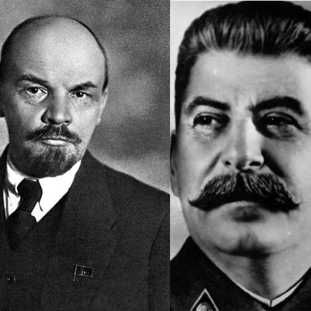

Laman Utama
-
Gelas dan Sedotan Kertas: Bualan Murah Kapitalis
Ditulis: 5/8/25

Kaum kapitalis ingin meyakini kita bahwa menggunakan sedotan dan gelas kertas
Baca selengkapnya
akan menyelamatkan lingkungan padahal disaat yang sama mereka merontokkan banyak
pepohonan, mengeruk isi bumi demi kekayaan pribadi -
Anarki Ialah Keteraturan.
Ditulis: 1/9/25

Mereka sering mendiskreditkan anarkis sebagai "perusuh", "anti peradaban",
Baca selengkapnya
"perusak", "tidak teratur", dan lain hinaan semacamnya, tidakkah
mereka menyadari bahwa kedamaian yang
mereka rasakan sekarang ada campur tangan para anarkis?
-
KEBRUTALAN POLISI INDONESIA
Ditulis: 29/8/25

Mengayomi katanya...
Baca selengkapnya
Mengayomi siapa? rakyat? ataukah para pemegang kuasa?
Sesama saudara kita, seorang pekerja, seorang driver ojol, dilindas begitu saja oleh mobil lapis baja. -
SOLIDARITAS BAGI RAKYAT PATI YANG MELAWAN!
Ditulis: 16/8/25

Solidaritas bagi rakyat Pati yang melawan!
Baca selengkapnya
Jika rakyat Pati berhasil meruntuhkan kekuasaan si raja kecil ini,
maka akan memberikan sentilan yang amat tajam bagi para pemegang kekuasaan,
bahwa kekuatan rakyat tidak dapat disepelekan -
Berjejaring Dalam Anarkisme
Ditulis: 15/7/25

Anarkisme pada dasarnya menolak semua otoritas yang sifatnya hierarkis
Baca selengkapnya
tapi tak terbatas pada negara—mereka juga menolak sistem yang berdasarkan dominasi,
seperti apa? Seperti sistem partai, kapitalisme, patriarki, homophobia, bahkan nasionalisme. -
Fasisme Tak Bisa Hidup Tanpa Kambing Hitam
Ditulis: 6/6/25

Kita tahu bahwasanya pasca perang dunia pertama, Jerman dalam kekacauan hebat, inflasi tinggi, harga meroket, rakyat jadi pengangguran, dan Perjanjian Versailles
memperdalam luka bangsa Jerman seolah Jerman lah yang menopang semua dosa-dosa perang dunia pertama.
Dalam masa-masa sulit seperti ini lanskap politik di Jerman amatlah terpolarisasi.
Komunisme menjanjikan pangan, lahan dan kedamaian; sementara Nazisme menawarkan
kestabilan, identitas bangsa dan kebanggaan nasional.
Baca selengkapnya
-
Kritik Atas Vanguardisme Lenin
Ditulis: 29/6/2025
1. Tujuan utama dibuatnya Leninisme adalah untuk menyesuaikan tafsir komunisme nya Marx agar sesuai dengan kondisi semi-feodal Rusia saat itu, beliau (Lenin) berfikir bahwasanya daripada menunggu pekerja teredukasi secara politis, lebih baik kita mendirikan sebuah partai yang disiplin yang akan di-isikan oleh orang-orang yang faham betul akan komunisme, dan akan membimbing para pekerja menuju peradaban yang komunis.
Baca selengkapnya
Jadilah partai pelopor (vanguard party)
2. Permasalahannya adalah: dengan dibuatnya partai pelopor secara tidak langsung Lenin memecah masyarakat menjadi dua, yaitu yang sadar secara politis dan yang belum matang secara politis